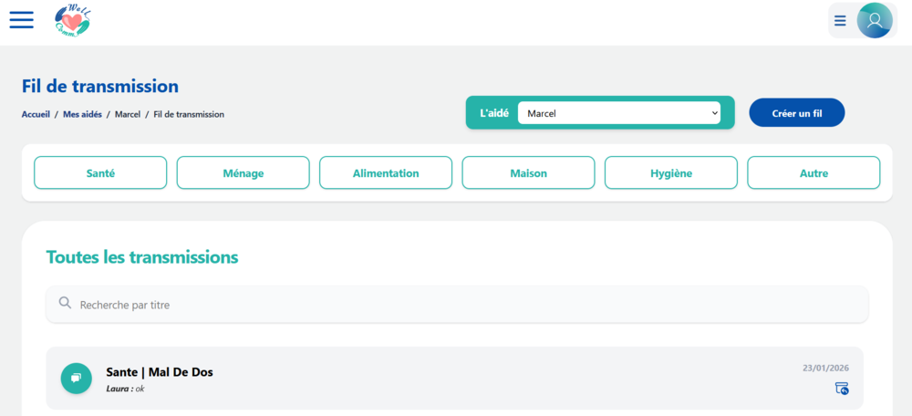

Wellcomm
Notre projet de 1er semestre de 2ème année, était de créer une application web à destination des aidants familiaux. Nous avons donc décidé de créer une application qui permettrait aux acteur s'occupant d'une personne handicapé (aidant, aide à domicile, médecin), de pouvoir communiquer efficacement. Notre équipe était composé de 5 personnes, et le projet était lui découpé en trois phases. D'abord la gestion de projet où je me suis principalement occupé de l'analyse des risques. Ensuite la modélisation de l'application avec la réalisation de la maquette et des diagrammes, dont le diagramme de classe dont je me suis occupé. Enfin la dernière phase celle du codage de l'application qui durait 3 semaines. Nous avions choisi de coder le backend en Spring Boot et le frontend en Next.js avec Typescript et Tailwind CSS. L'une des difficultés de ce projet était que nous n'avions jamais vu tous ces frameworks et avons donc due les apprendre lors de la réalisation de l'application. Mais apprendre à utiliser ces frameworks était très intéressant et enrichissant. Dans l'application, je me suis occupé de la page des archives et de celle du résumé avec les dernières communication en date. Je me suis également occupé de tous le système de permmissions, et de rédiger les tests unitaires. Au final nous avions une application opérationelle et responsive permettant une communication plus rapide et efficace.Extrait de la page de création d'une communication
